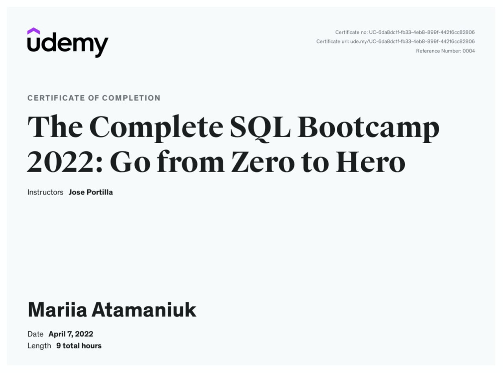
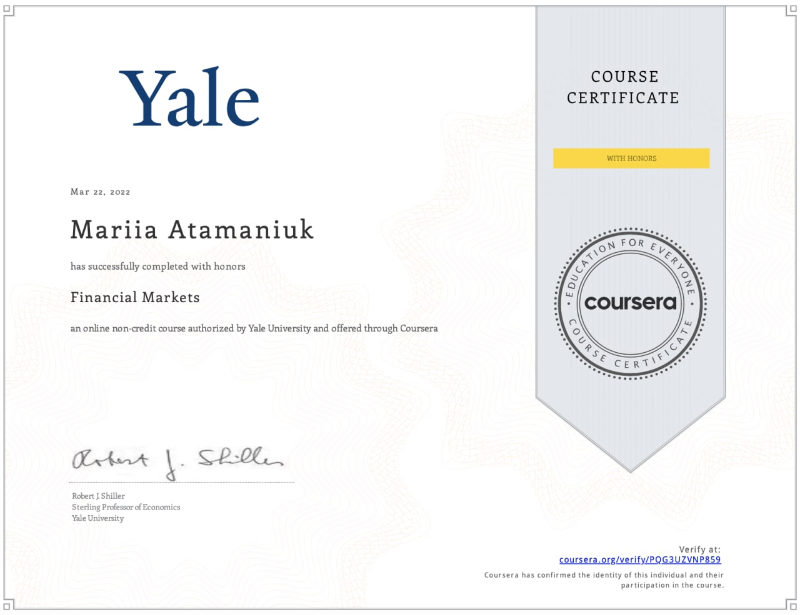
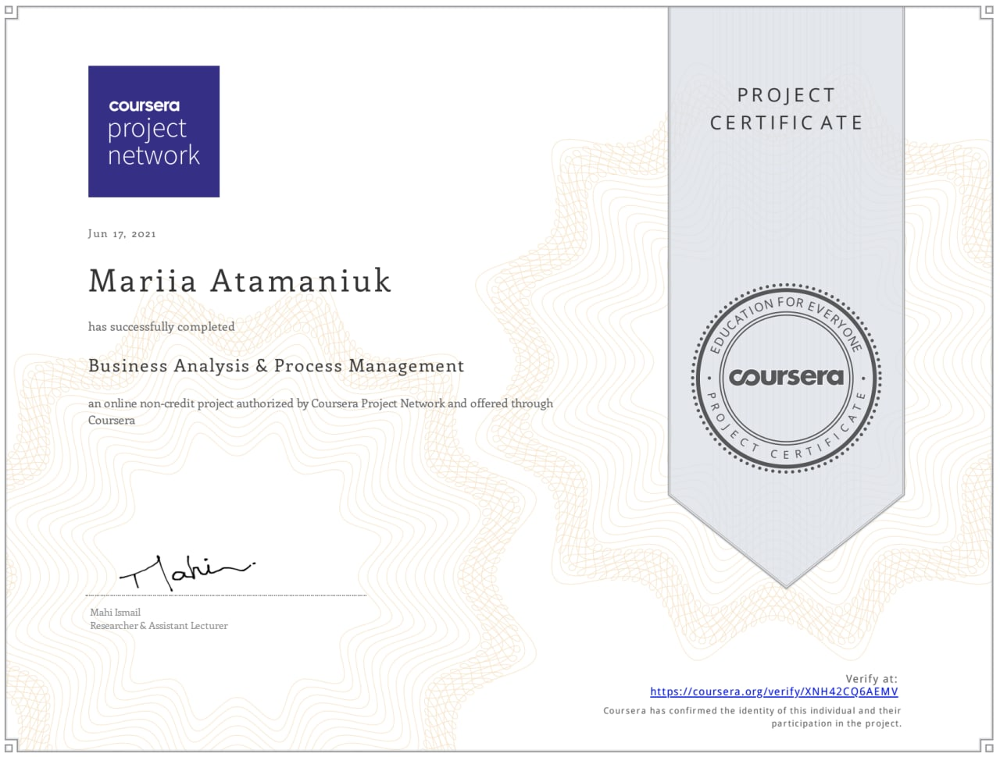
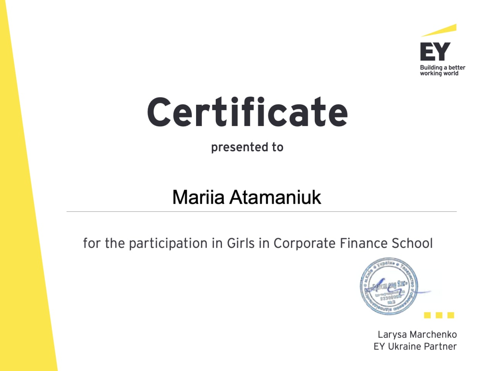

Serious stuff
Intro part
My name is Mariia Atamaniuk. I am a professional analyst with 5+ years of experience in market research, product and customer analytics, as well as in investment projects.
Experienced in SQL (PostgreSQL), R (RStudio), and Tableau. Skilled in data processing, dealing with databases, building models using econometric and statistics tools, setting and monitoring KPIs for products, facilitating digital marketing using Google Analytics and SEO tools.
Advanced in spoken and written English. Good at communication with customers and managing various stakeholders, presenting insights to them.
I was born in Kyiv (Ukraine) - the capital of great people! Unfortunately, we have a noisy southern neighbor so we are sorry for the inconveniences if you decide to visit Ukraine now.
Certificates
I have a bunch of professional certificates that can prove you my expertise in the respective fields.




Plots
As a data analyst, I am building nice graphs. It is my job to do so. By the way, these are not my graphs.